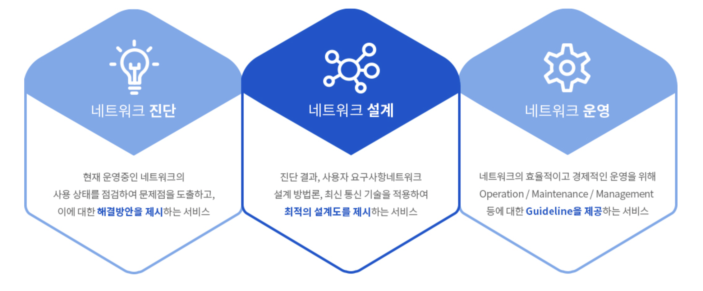

|  | #프로젝트 요약 통칭 네트워크 관리 서비스로 각종 서버 및 네트워크 보안 서비스와 구축이 가능하며, 해당 사용자의 기록을 모니터링 할 수 있다 #프로젝트 목표 모니터링을 보다 쉽게하여 자원 소모를 아끼며, 보안 기능도 추가하였다. #기술스택 JAVA, ORACLE DB, MAVEN, SNMP4J, IDS, IPS, VPN, PKI #6인 구성 UI: 2인 / 보안 시스템, 네트워크, DB : 4인 #후기 시작부터 막막했다. 할당 되어 있는 IP들을 가져와서 권한을 얻는것도 생각보다 일이었고, 보안기능들은 오픈소스가 은근히 많기에 시간만 어마어마하게 들인다면 어떻게든 추가할 수 있었다...? |